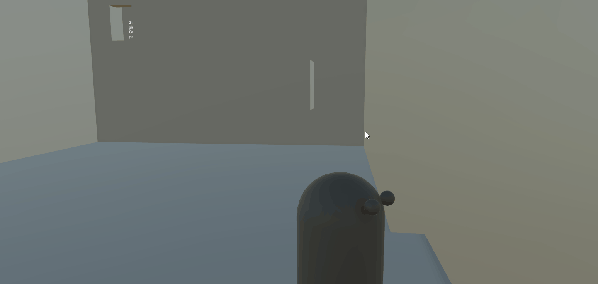
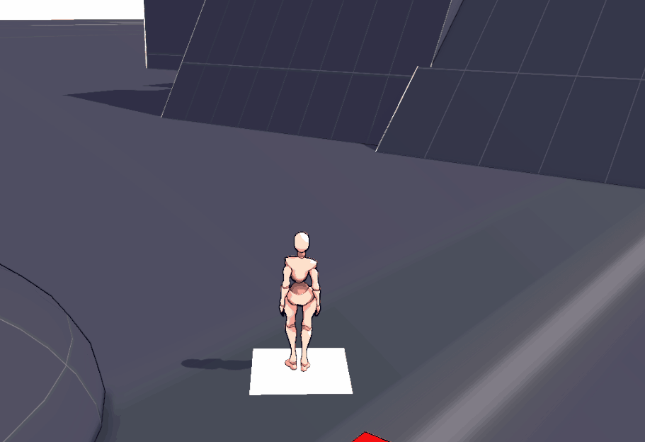
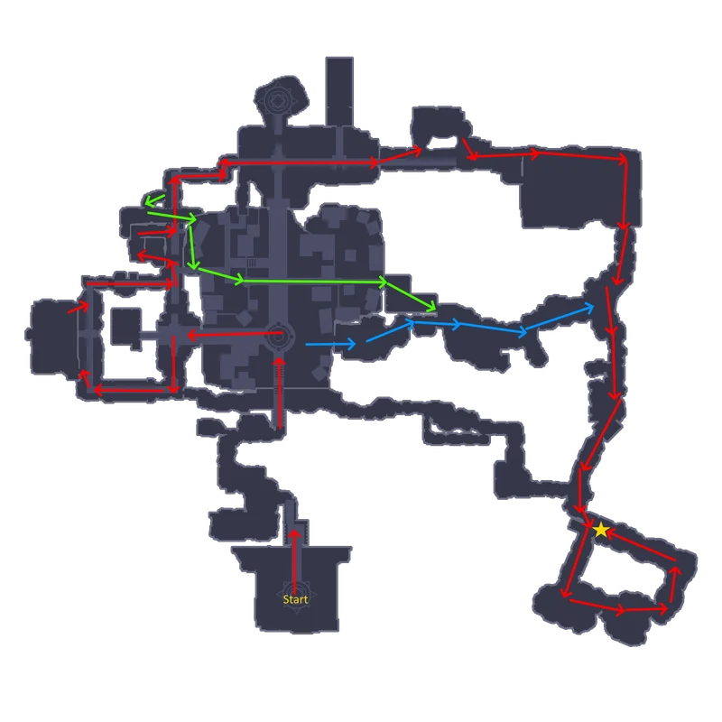
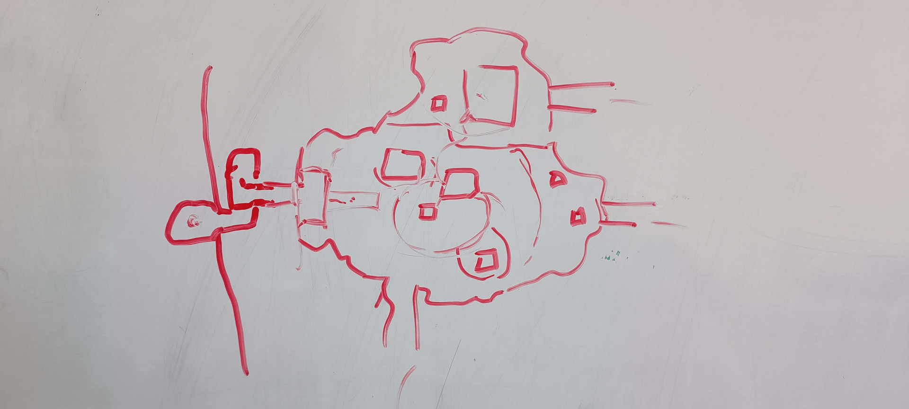
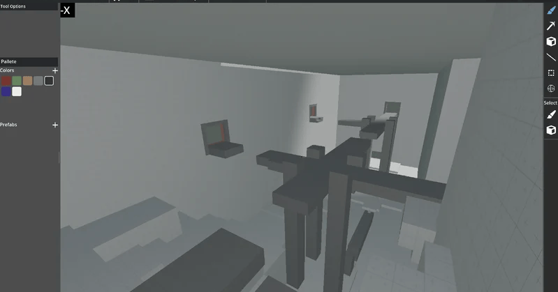

steam page
Liturnian
2025-2026
Duration: 9 months
Team size: 8
Role(s) and responsibilities:
Gameplay Design lead
Level Design lead
Additional programming
Discover a strange world inhabited by living lights. Liturnian is a 3D-Metroidvania with fluid movement, fights against strange creatures and exciting puzzles.
First Protoype

Final Game

Gameplay Design
For this project I was responsible for gameplay and level design. Because of the nature of the genre this game takes place in (metroidvania 3d platformer), the gameplay is very focused around the movement of the player character. The core pillar of gameplay that I designed the player moveset around was “Movement Freedom” meaning that the player would have many options to tackle how to move through an environment when they have all the abilities. The final character controller ended up with the following movement abilities: Grapple hook swing, Slide, Long jump, Air dive, Wall jump, Ground pound and High jump


I fully developed and protyped the movement, writing all the code and behavior along the way. At every step of the creation of the movement options I tested if the movement was fun and intuitive and eliminated all prototyped movement options that didn’t seem fun to play.
After the selection process I polished up movement removing bugs and weird interactions, constantly focused on that feeling of movement freedom. If a player fails a platforming section it should always feel like they made the mistake and not like the game didn’t respond in the way they expected.


Finally for gameplay I developed a rudimentary combat system. Combat involved players attacking with a chain and hook that replaced their right arm. When they do normal attacks it would always aim towards an enemy based upon weighted parameters such as distance to the player, distance to the center of the screen and if the enemy is in front or behind the player. We chose to go with this for normal attacks because properly landing attacks on enemies was very hard when players are also platforming around at high speeds, so an auto aiming feature felt like the best solution at the time. Unfortunately this just turned into players spamming the attack button without really thinking about what they were doing. Because we did want to have combat present in the game but development was cut short, combat did not receive the required amount of time to be fully polished up and be properly balanced and build around player fun.
Level Design
For the level design of Liturnian, there were two different goals: the map needed to be interesting on a macro level through may differen ways to progress in the game, following design principles of Metroidvania map design, and keep individual gameplay sections interesting while not making it annoying to backtrack through them. The map on the right is the final map of the first zone of the game. Due to development being cut short, this is also the only zone that was fully developed. The star on the map is a pickup for the Slide ability that players need to progress into the next zones. The red arrows are the main obvious path a player can follow, while the green and blue arrows are more obscure optional paths.


To get the Macro map design down before making the smaller sub-levels, the map was first prototyped on a whiteboard. This was to get an idea of scale, determine the type of levels needed, and to space out secrets and shortcuts over the whole map. This same process was also done for the zone on the right of the first one.
Once the map shape was decided, the smaller level sections could be designed. Our whole map was cut up into what we called “rooms”; rooms are sections of the map that we stream in based on the player's position to give one smooth experience with no loading screens. A room also contains platforming challenges with distinct beginnings and ends. Each room was built using a tool made by one of our developers called Voxel Smith. Using this tool, we could do rapid prototyping of levels to very quickly test if the room would work. Over the course of the project, I designed 34 rooms.


Using the data from Voxel Smith, I made a tool inside Unity that allows artists to define 3d tile sets, instantly allowing terrain meshes to be placed over a room that was ready. Saving on time making final terrain meshes for rooms.